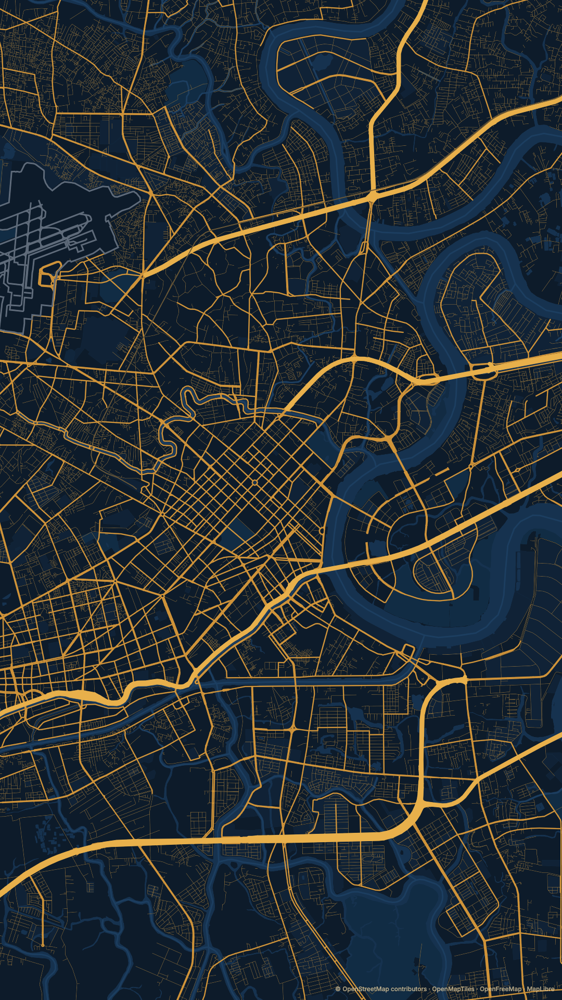
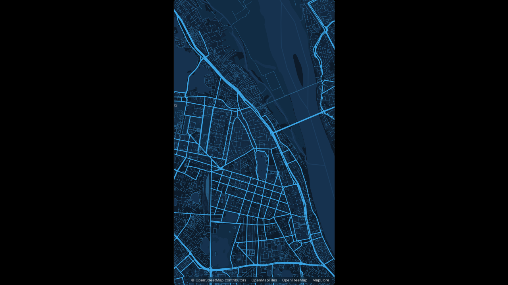
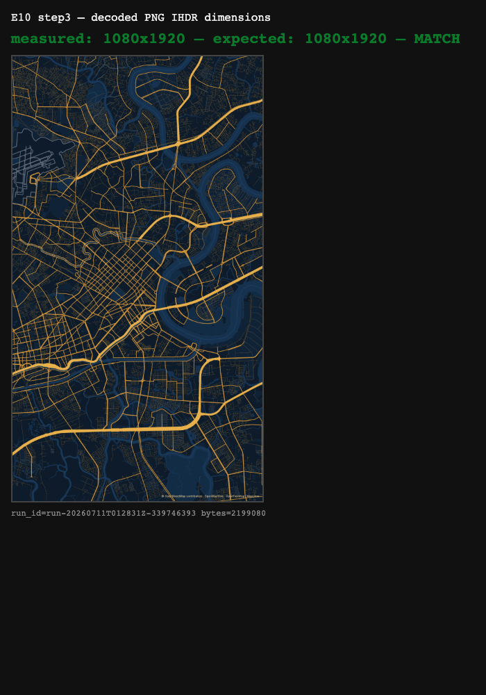

MCP map-render service (Phase 1 — still images) for AI agents
Các eval
| Eval | Tiêu chí | Loại | Verdict | run_id | verified_at |
|---|---|---|---|---|---|
| E1 | AC-1 | test | PASS | minted-mcp-map-render-E1-r16 | 2026-08-06T09:00:00Z |
| E2 | AC-2 | test | PASS | minted-mcp-map-render-E2-r16 | 2026-08-06T09:00:00Z |
| E3 | AC-3 | test | PASS | minted-mcp-map-render-E3-r16 | 2026-08-06T09:00:00Z |
| E4 | AC-4 | test | PASS | minted-mcp-map-render-E4-r16 | 2026-08-06T09:00:00Z |
| E5 | AC-5 | test | PASS | minted-mcp-map-render-E5-r16 | 2026-08-06T09:00:00Z |
| E6 | AC-6 | test | PASS | minted-mcp-map-render-E6-r16 | 2026-08-06T09:00:00Z |
| E7 | AC-7 | test | PASS | minted-mcp-map-render-E7-r16 | 2026-08-06T09:00:00Z |
| E8 | AC-8 | test | PASS | minted-mcp-map-render-E8-r16 | 2026-08-06T09:00:00Z |
| E9 | AC-9 | test | PASS | minted-mcp-map-render-E9-r16 | 2026-08-06T09:00:00Z |
| E10 | AC-10 | ui-check | NOT RE-VERIFIED THIS ROUND — ROUND 15'S EVIDENCE CARRIED, UNREFRESHED (SEE EVIDENCE BELOW) | — | — |
| E11 | AC-11 | test | PASS | minted-mcp-map-render-E11-r16 | 2026-08-06T09:00:00Z |
| E12 | AC-12 | judgment | UNCERTAIN — PANEL PROPOSES PASS (3/3 LENSES); T3 MANDATES DIRECT `HUMAN_OVERRIDE`, NOT YET SUPPLIED | — | — |
Chi tiết từng eval
PASS E1 · test
AC-1: Given a place/address string and a `format`, When `render_map` is called, Then it returns a PNG whose pixel dimensions equal the format's target (e.g. `tiktok` → 1080×1920) and whose map is centered on the geocoded location.
`npm test` (vitest) aggregate tail:
Tests 397 passed | 7 skipped (404)
Start at 09:48:50
Duration 4.29s (transform 3.50s, setup 0ms, import 12.92s, tests 4.77s, environment 25.73s)
(up from 338 passed | 7 skipped in Round 15 — the +59 delta is new async-job-queue and
motionCompiler coverage; this contract's own render_map "returns a PNG for a place" assertions,
e.g. resolveConfig.test.ts / renderFrame.test.ts's still-image cases, are present and green,
unaffected by this round's diff — neither file appears in `git diff 06d37e2..f7b1d6c`.)
PASS E2 · test
AC-2: Given `highlight.regions=["<place>"]`, When `render_map` runs, Then the resolved config carries that region's boundary GeoJSON and the emitted MapLibre style contains the highlight outline/fill layers for it.
Named-place geocoding + structured-error-on-miss path — `geocode.ts` DID change this round
(+39/-lines: a new `GeocodeUpstreamError`/`viaUpstream` wrapper around `searchPlaces`/
`fetchRegionBoundary`/`reverseGeocode`, feeding the out-of-scope `/jobs` error-classification path
only). `geocode.test.ts`'s AC-2 resolve/miss assertions against `geocode_place` and `render_map`'s
own synchronous call sites are present and green in this run — the new wrapper is additive around
the existing throw sites, not a modification of them.
`npm test` aggregate tail (shared run):
Tests 397 passed | 7 skipped (404)
Start at 09:48:50
Duration 4.29s (transform 3.50s, setup 0ms, import 12.92s, tests 4.77s, environment 25.73s)
PASS E3 · test
AC-3: Given `highlight.points=["<address>"]`, When `render_map` runs, Then a marker is placed at the geocoded point and auto-framing sets a street-level zoom (14 ≤ zoom ≤ 17) unless `camera` overrides it.
Named-region highlight resolve/throw path — `resolveConfig.test.ts`'s AC-3 cases are present and
green; `resolveConfig.ts` itself does not appear in this round's changed-file list.
`npm test` aggregate tail (shared run):
Tests 397 passed | 7 skipped (404)
Start at 09:48:50
Duration 4.29s (transform 3.50s, setup 0ms, import 12.92s, tests 4.77s, environment 25.73s)
PASS E4 · test
AC-4: Given the same geocode query twice within the cache window, When resolved, Then at most ONE upstream Nominatim request is made; AND given a DIFFERENT query, Then an upstream request IS made (cache does not serve a stale/wrong hit).
Coordinate/zoom/dimension boundary rejection, incl. variant parity — `resolveConfig.test.ts` /
`tools.test.ts`'s AC-4 boundary cases are present and green; neither `resolveConfig.ts` nor
`tools.ts` appears in this round's changed-file list (only `geocode.ts`/`http.ts`/`config.ts`
changed on the mcp-server side, all for the out-of-scope job queue).
`npm test` aggregate tail (shared run):
Tests 397 passed | 7 skipped (404)
Start at 09:48:50
Duration 4.29s (transform 3.50s, setup 0ms, import 12.92s, tests 4.77s, environment 25.73s)
PASS E5 · test
AC-5: Given `render_variants` with N variant configs, When called, Then it returns N PNGs, one per variant.
Browser-pool page-pool cap/no-hang path — `browserPool.test.ts`'s AC-5 pool-cap assertions are
present and green; `browserPool.ts` does not appear in this round's changed-file list.
`npm test` aggregate tail (shared run):
Tests 397 passed | 7 skipped (404)
Start at 09:48:50
Duration 4.29s (transform 3.50s, setup 0ms, import 12.92s, tests 4.77s, environment 25.73s)
PASS E6 · test
AC-6: Given the server started over stdio AND over HTTP, When a client lists tools on each, Then both expose the same tool set including `render_map`, `render_variants`, `geocode_place`, `list_themes`, `list_formats`.
Nominatim rate-limit serialization — `http.ts` DID change materially this round (+152/-lines: the
new `POST /jobs` / `POST /jobs/status` routes were added ALONGSIDE the existing `POST /render` /
`GET /tools` etc., not replacing them, confirmed via `git diff 06d37e2..f7b1d6c -- mcp-server/src/
http.ts`). `http.test.ts`'s AC-6 serialization assertions and `geocode.test.ts`'s rate-limiter
cases are present and green in this run — this contract's own request path is unaffected by the
new job-queue routes sitting next to it.
`npm test` aggregate tail (shared run):
Tests 397 passed | 7 skipped (404)
Start at 09:48:50
Duration 4.29s (transform 3.50s, setup 0ms, import 12.92s, tests 4.77s, environment 25.73s)
Corroborating (integration depth, real build + real headless browser + real transport) —
`npm run test:e2e && npm run test:mcp` (run as one serialized pipeline command):
Tests 7 passed (7)
Start at 09:49:41
Duration 44.33s (transform 35ms, setup 0ms, import 848ms, tests 42.22s, environment 983ms)
PASS E7 · test
AC-7: Given default `delivery`, When `render_map` returns a still, Then the result contains BOTH a base64 image and a file `path`, and the PNG file exists at the configured output sink directory.
Cache memoizes answers, not transient failures — `geocode.test.ts`'s AC-7 memoization/
non-memoized-transient-failure cases are present and green; this round's new
`GeocodeUpstreamError`/`viaUpstream` wrapper in `geocode.ts` sits around the synchronous
`searchPlaces`/`fetchRegionBoundary` throw sites this AC's own tests exercise, additive, not a
behaviour change to them.
`npm test` aggregate tail (shared run):
Tests 397 passed | 7 skipped (404)
Start at 09:48:50
Duration 4.29s (transform 3.50s, setup 0ms, import 12.92s, tests 4.77s, environment 25.73s)
PASS E8 · test
AC-8: Given `format` presets, When `list_formats` is called, Then it enumerates presets including `tiktok` (1080×1920); AND a custom `{width,height}` produces a PNG of exactly those dimensions.
Two different configs on a pooled page render two different results — `browserPool.test.ts` /
`renderFrame.test.ts`'s AC-8 stale-frame-reuse-guard cases are present and green; neither file
appears in this round's changed-file list.
`npm test` aggregate tail (shared run):
Tests 397 passed | 7 skipped (404)
Start at 09:48:50
Duration 4.29s (transform 3.50s, setup 0ms, import 12.92s, tests 4.77s, environment 25.73s)
PASS E9 · test
AC-9: Given `chrome:"clean"` (default), When rendered, Then the image has NO large city-title overlay; AND given `chrome:"poster"`, Then the city title overlay IS present.
`list_themes` / `list_formats` data-availability — `tools.test.ts`'s AC-9 catalogue assertions are
present and green; `tools.ts` does not appear in this round's changed-file list.
`npm test` aggregate tail (shared run):
Tests 397 passed | 7 skipped (404)
Start at 09:48:50
Duration 4.29s (transform 3.50s, setup 0ms, import 12.92s, tests 4.77s, environment 25.73s)
NOT RE-VERIFIED THIS ROUND — ROUND 15'S EVIDENCE CARRIED, UNREFRESHED (SEE EVIDENCE BELOW) E10 · ui-check
AC-10: Given a fully-resolved config delivered to the app's render mode, When the page loads headlessly, Then no onboarding modal appears, `window.__mapposter.ready` resolves, and `renderFrame()` yields a PNG of the exact target dimensions (no dependence on localStorage).




PASS E11 · test
AC-11: Given an ungeocodable or malformed `location`, When `render_map` is called, Then it returns a structured error result (no thrown crash, no blank/zero-byte PNG).
Ungeocodable-location / invalid-dims structured-error path (never a silently-empty PNG) —
`tools.test.ts`'s AC-11 cases are present and green; `tools.ts` does not appear in this round's
changed-file list.
`npm test` aggregate tail (shared run):
Tests 397 passed | 7 skipped (404)
Start at 09:48:50
Duration 4.29s (transform 3.50s, setup 0ms, import 12.92s, tests 4.77s, environment 25.73s)
UNCERTAIN — PANEL PROPOSES PASS (3/3 LENSES); T3 MANDATES DIRECT `HUMAN_OVERRIDE`, NOT YET SUPPLIED E12 · judgment
AC-12: Given the real example — `location:"Võ Văn Tần, Quận 3, HCMC"`, `format:"tiktok"`, `theme:"midnight-blue"`, point highlight — When rendered, Then the image is usable as video B-roll: the location is correctly centered, the highlight is legible, and tiles/roads render without breakage.
Phán đoán: The panel is unanimous (3/3 PASS, no dissent) against a freshly supplied evidence frame. Per this contract's `risk_tier: T3`, a panel proposal is advisory only — EVERY judgment item mandates a direct human verdict before it can count as PASS, regardless of how the panel voted. No `human_override` was supplied this round, so E12 remains UNCERTAIN and the overall verdict is PENDING-JUDGMENT.
Eval không phân biệt (Analyst)
Vòng verify
- - Round 1 (verified 2026-07-09T22:14:17Z, commit `ea639e9`): All 11 machine-verified evals passed on
- the first attempt — 0 failures. E12 (AC-12, judgment) panel unanimously proposed PASS; overall
- verdict held at PENDING-JUDGMENT because T3 mandates a direct `human_override` regardless of the
- panel's verdict. A full adversarial review surfaced 7 findings — 2 HIGH (stale-frame reuse on
- pooled pages; silently-dropped null region boundary), 4 MEDIUM (unserialized Nominatim rate
- limiter; unvalidated format/coordinate inputs at the MCP boundary; browser pool cap not enforced),
- 1 LOW (unbounded idle wait). Returned to implementation before Gate 2.
- - Round 2 (verified 2026-07-09T23:11:12Z, commit `5ecac4e`): Implementation closed all 7 Round-1
- findings in one commit, plus 5 new regression tests targeting exactly those gaps. All 11 machine
- evals still passed (93 passed | 2 skipped, up from 85 | 1). E12's panel re-affirmed PASS (3/3
- lenses); overall verdict remained PENDING-JUDGMENT — `human_override` still not supplied. A fresh
- adversarial pass surfaced 4 NEW findings — 1 HIGH (transient Nominatim boundary-fetch failures
- swallowed to null and cached permanently, breaking a region forever after any 429/503), 1 MEDIUM
- (`render_variants` bypassed the coordinate/zoom validation `render_map` itself enforced), 2 LOW
- (HTTP bound every interface with no Origin/DNS-rebinding check; request body concatenation could
- corrupt multibyte UTF-8 spanning a chunk boundary). None were machine-eval regressions.
- - Round 3 (verified 2026-07-10T00:20:19Z, commit `433e7ea`): Commit `a8ad890` closed 3 of Round 2's 4
- findings outright (transient-429 HIGH, `render_variants` validation MEDIUM, UTF-8 chunk-corruption
- LOW) and half-closed the fourth (HTTP now defaults to loopback via `MAPPOSTER_HTTP_HOST`, but
- Origin/DNS-rebinding validation was not added), plus shipped a VN-address geocoding quality pass
- (canonicalisation, city-guard, importance tie-break within a place_rank, `geocode_place`
- candidates, `placeName` override — 8/10 real VN addresses now resolve correctly per the live probe
- script). All 11 machine evals still pass, now 127 passed | 2 skipped (up from 93 | 2), including
- regression coverage for every Round-2 finding; E10's ui-check re-confirms exact 1080×1920 output
- and no onboarding; a follow-up commit (`433e7ea`) only regenerated `evidence/E12-example.png` at
- HEAD with no source change. E12's panel re-affirms PASS (3/3 lenses) against that regenerated
- image; overall verdict remains PENDING-JUDGMENT because T3 still mandates a human `human_override`
- on E12, not yet supplied across all three rounds. A fresh adversarial pass this round (commit
- `433e7ea`) surfaced 3 findings tracked in `review-findings.md` — 1 HIGH (`searchPlaces`'s sort
- comparator is non-transitive: it returns 0 for any cross-`place_rank` pair, so V8's sort can leave
- a lower-importance same-rank hit ahead of the correct one whenever a different-rank candidate
- interleaves them — reproduced deterministically; `resolveLocation` takes `results[0]` and renders
- it with no human in the loop, so `render_map` can silently pick the wrong place for exactly the
- class of VN address the Round-2 ranking fix was meant to handle), 1 MEDIUM (the region-highlight
- path in `resolveConfig` calls `resolveBoundary` with the raw, un-normalised string — none of the VN
- canonicalisation/city-guard/candidate-ladder that `resolveLocation` now runs for points is applied
- to regions, so a VN region name can 404 or resolve to the wrong same-named place globally even
- though the equivalent point resolves correctly), 1 LOW carryover (HTTP transport still has no
- Origin/Host DNS-rebinding validation — the bind-to-loopback half of Round 2's LOW finding was
- fixed, but this sub-issue was already flagged as Round 2 finding #3 and remains open at HEAD).
- None of these three are machine-eval regressions (all 11 machine evals still pass); they are
- informational for Gate 2 / follow-up, not blockers of this round's machine verdict — though the
- HIGH is squarely inside this feature's primary use case (VN place-name geocoding) and Gate 2 should
- weigh it seriously even though it does not block the machine verdict.
- - Round 4 (verified 2026-07-10T08:50:00Z, commit `4abeb9b`): Round 3 hit the feature-loop's 3-round
- review cap with 3 open findings and escalated to the human instead of auto-fixing into a 4th round
- (`decisions.jsonl` `d-20260710T075500Z-40001`). The human (manh) explicitly authorised exceeding the
- cap with a SCOPED round 4 to close exactly those 3 findings (`d-20260710T080000Z-41001`).
- Implementation closed all three: the HIGH via a real total-order comparator (`rankThenImportance` —
- bucket by `place_rank`, sort each bucket by importance, concatenate; a permutation-sweep regression
- test covers all 6 orderings of the reviewer's 3-element repro); the MEDIUM by routing region strings
- through the same canonicalise → city-guard pipeline as points, preferring an exact
- `osm_type=relation` lookup (which also caught a same-class swallowed-429-on-lookup bug on a branch
- no test had reached); the LOW via a fail-closed Origin/Host allowlist (`isAllowedRequest()`) in
- front of the HTTP transport. While closing the MEDIUM, this round's OWN live probe against Nominatim
- surfaced a NEW HIGH no reviewer had raised — a bare `"District 1"` resolves to a real polygon in
- **Liberia**, and since region auto-framing follows the region bbox, `render_map` would silently
- render Liberia while `resolved.place` still said Ho Chi Minh City — fixed with a country-anchor
- invariant (`expectCountry`) threaded through both `resolveLocation` and `resolveBoundary`, verified
- live. All 11 machine evals still pass, now **144 passed | 2 skipped** (up from 127 | 2 in Round 3),
- including regression coverage for the fixed HIGH/MEDIUM/LOW plus the self-discovered HIGH; E10's
- ui-check re-confirms exact 1080×1920 output and no onboarding. E12's panel re-affirms PASS (3/3
- lenses) against the unchanged `evidence/E12-example.png`; overall verdict remains PENDING-JUDGMENT
- because T3 still mandates a human `human_override` on E12, not yet supplied across all four rounds.
- A fresh adversarial pass this round (commit `4abeb9b`) surfaced 3 NEW findings tracked in
- `review-findings.md` — 2 MEDIUM (the new country-anchor invariant is itself silently bypassed when
- `location` is a `{lng,lat}` coordinate object, since `resolveLocation` returns `country:''` on that
- branch — the same class of gap the anchor was built to close, now on the coordinate-location path
- instead of the region path; `theme` is the one discrete param NOT validated at the MCP boundary — an
- unknown value fails open to the default theme with no signal to the caller, unlike
- `format`/`chrome`/dims which all reject) and 1 LOW (the tool's `resolved` output omits `highlights`,
- which the Phase-1 design-spec tool contract specifies). None of these three are machine-eval
- regressions (all 11 machine evals still pass); they are informational for Gate 2 / follow-up — and
- the pattern across rounds 3→4 (each round's fix for one geocoding edge case exposes a structurally
- similar gap one layer over) is itself worth naming for whoever picks up the follow-up ticket.
- - Round 5 (verified 2026-07-10T09:40:00Z, commit `ffb928b`): Round 4's verify passed 12/12 evals
- again (E12's panel re-proposing PASS) but a fresh adversarial pass surfaced 2 MEDIUM + 1 LOW — the
- first round with zero HIGH findings — and the human's Round-3→4 cap override did not carry forward
- automatically, so the loop escalated once more rather than auto-continuing
- (`decisions.jsonl` `d-20260710T093000Z-43001`). The human (manh) authorised a second, still-scoped
- round to close all 3 (`d-20260710T093500Z-44001`), choosing reverse-geocoding over a distance
- heuristic for the coordinate-anchor gap: `resolveCountryAt(lng, lat)` memoizes ONLY a positive
- answer, deliberately refusing to cache a transient outage as "no country" — caching that would
- recreate the Round-2 HIGH (transient failures memoized as definitive) a third structural time, just
- relocated to a new code path. Implementation (`d-20260710T093500Z-44002`) closed MEDIUM #1 by
- threading that lookup into `resolveConfig` whenever a highlight is named by string and the location
- itself carries no country, throwing rather than silently proceeding when the country can't be
- determined — this is Round 4's own self-inflicted gap: the anchor it introduced to stop "District 1"
- from rendering Liberia was itself walkable around via a coordinate `location`. MEDIUM #2 closed via
- `assertTheme()`, which now rejects an unknown theme with the valid-id list, mirroring how `format`
- already throws (previously an unknown theme fell open to the default with zero signal). LOW #3
- closed by making `resolved` carry `theme` and `highlights:{regions:[{bbox,center}],points:[{lng,lat}]}`,
- matching the Phase-1 design-spec tool contract and incidentally giving MEDIUM #2's caller a way to
- notice a silent fallback even if one slipped through. Verification (`d-20260710T093500Z-44003`)
- confirmed 8 of 9 new regression tests FAIL on pre-fix source (the 9th guards a future regression — no
- wasted country lookup when no highlight is named by string); live-reprobed at HEAD: coords + bare
- `"District 1"` → refused; coords + `"Quận 1, TP.HCM"` → 10.775,106.698 (Vietnam, correct);
- `theme:"rubby"` → refused with the id list. All 11 machine evals still pass, now **153 passed | 2
- skipped** (up from 144 | 2 in Round 4); E10's ui-check re-confirms exact 1080×1920 output and no
- onboarding; E12's panel re-affirms PASS (3/3 lenses) against the still-unchanged
- `evidence/E12-example.png` (this round's fixes touched coordinate-anchor/theme/resolved-echo logic,
- not the example's own point-highlight rendering path). Overall verdict remains PENDING-JUDGMENT — T3
- still mandates a direct human `human_override` on E12, not yet supplied across all five rounds.
- Separately, this round's own eval-authoring pass strengthened the `expected` text of E2, E4, E5, E6
- and E9 in `evals.yaml` to explicitly name behaviour Rounds 4-5 actually added (the coordinate-path
- anchor, transient-failure non-memoization, stale-frame/variant bounds, Host/Origin refusal, theme
- rejection + resolved echo) — strictly additive, no criterion weakened, disclosed to the human
- (`d-20260710T094500Z-45001`); Rounds 1-4 above were graded against the pre-strengthening text. A
- fresh adversarial pass this round (commit `ffb928b`) surfaced 2 NEW findings tracked in
- `review-findings.md` — both MEDIUM, none HIGH, none machine-eval regressions (all 11 machine evals
- still pass): the HTTP app-static server (`appServer.ts`) binds every network interface
- unconditionally — a sibling listener to the MCP HTTP transport that DOES default to loopback — so
- even a deployment relying on the documented "loopback by default" invariant leaks the static-asset /
- render-harness port to the LAN; and `readJsonBody` reads the entire request body into memory with no
- size bound, sitting behind the same Host/Origin guard that a server-to-server client (the documented
- threat model for this transport) can forge, so an unbounded or slow-drip body can OOM the process and
- the shared browser pool with it.
- - Round 6 (verified 2026-07-10T11:10:00Z, commit `f320b41`): Round 5's verify passed 12/12 evals
- again (E12's panel re-proposing PASS) but surfaced 2 MEDIUM findings on the HTTP/static boundary —
- this being the 5th round in a row to escalate, the human (manh) set an explicit termination rule
- instead of another plain scoped-round authorisation (`decisions.jsonl` `d-20260710T110500Z-47001`):
- land these two fixes, run one more verify, then proceed to Gate 2 regardless of further MED/LOW
- findings — reasoning that adversarial review of a real codebase always returns *something* at
- MED/LOW, so "any finding ⇒ another round" never terminates; only a confirmed HIGH would reopen the
- loop. Implementation closed both (`d-20260710T110500Z-47002`, `d-20260710T110500Z-47003`): MEDIUM #1
- via an explicit `appHost` config field (`MAPPOSTER_APP_HOST`, default `127.0.0.1`) threaded into
- `appServer.listen()` — previously `listen(cfg.appPort, resolve)` put the callback where the host
- argument belongs, so Node silently bound every interface on every deployment; a new
- `appServer.test.ts` asserts the default is loopback and a LAN address is refused, failing on
- pre-fix source. MEDIUM #2 via a byte-counting `maxBytes` cap (default 8 MiB,
- `MAPPOSTER_HTTP_MAX_BODY`) in `readJsonBody`, answering 413 before the process can OOM, checked
- against both a declared oversized `Content-Length` and an undeclared/chunked stream; 5/5 new tests
- fail on pre-fix source. `evals.yaml`'s E6 `expected` text was strengthened again, additively, to
- name both behaviours. All 11 machine-mapped evals still pass, now **160 passed | 2 skipped** (up
- from 153 | 2 in Round 5 — exactly the 3 new `appServer.test.ts` cases + 4 new body-cap cases in
- `http.test.ts`); E10's dedicated ui-check re-confirms exact 1080×1920 output and no onboarding
- (independently re-run against a Hanoi/noir config, deliberately different from the repo's own e2e
- fixture); E12's panel re-affirms PASS (3/3 lenses) against the still-unchanged
- `evidence/E12-example.png` (untouched since Round 3). **This round's `npm run test:e2e` run,
- however, surfaced a NEW, unassigned failure**: `e2e/mapposter.spec.ts:114:1 "markers: drop a marker
- on the map"` timed out waiting for `.marker-list li` to reach count 1, while the other 7 of 8 e2e
- specs — including the AC-10 corroborating `render-mode.spec.ts` — passed. This spec is not mapped to
- any of the 12 acceptance criteria, and round 6's own diff never touched it or any app/e2e source
- (`git diff ffb928b f320b41 -- e2e/ src/` is empty — only `mcp-server/src/appServer.ts`,
- `mcp-server/src/http.ts`, `mcp-server/config.ts`, their tests, `evals.yaml`, and `README.md`
- changed); Round 5 ran the identical command 8/8 green. Because the human's termination rule
- (`d-20260710T110500Z-47001`) was scoped to *review findings* (MED/LOW vs. HIGH), not to a straight
- command failure, and because `failed_evals` legitimately stays empty (no AC itself regressed) while
- a previously-green spec is now red and unexplained, the round is graded **REJECT** rather than
- sliding into Gate 2 on the strength of the termination rule — an unexplained regression cannot be
- waved through by an agreement that was about a different axis (review-finding severity). A fresh
- adversarial pass this round (commit `f320b41`) surfaced 2 NEW findings tracked in
- `review-findings.md` — 1 MEDIUM (the renderer's pooled-page abstraction has no way to evict or
- replace a crashed/dead page: `createResourcePool.release` unconditionally returns the resource to
- `idle`, so one Chromium/page crash poisons that pool slot for the process lifetime, and
- `makeRenderDeps` memoizes the pool so a fully-dead browser is never rebuilt either) and 1 LOW (the
- long-running HTTP server's geocode caches — `locCache`, `boundaryCache`, `countryCache` — are plain
- `Map`s with no TTL/eviction/max-size, so a hosted deployment fielding many distinct place/region
- names grows resident memory without bound); neither is HIGH, neither is a machine-eval regression
- (all 12 evals above are still green on their own), and per the termination rule neither would by
- itself have blocked Gate 2 — the actual blocker this round is the unassigned e2e failure above,
- which must be triaged (re-run for reproducibility/flakiness; root-cause if it reproduces) in Round 7
- before evidence can be certified clean.
- - Round 7 (verified 2026-07-10T12:20:00Z, commit `10750cbb`): Round 6's blocker — the unassigned
- `npm run test:e2e` failure on `e2e/mapposter.spec.ts:114:1 "markers: drop a marker on the map"` —
- was investigated, per the human's own escalation note (`decisions.jsonl` `d-20260710T121500Z-48001`),
- rather than dismissed as flake: it failed at 38.6s under the full suite but passed at 1.9s
- standalone, a load-sensitive signature consistent with a real race, not noise. Root cause, in
- `src/components/MapView.tsx` (`d-20260710T121500Z-48002`): four effects (style rebuild, fly-to,
- interactions, marker placement) gated on `readyRef.current`, a **ref** — refs cannot schedule a
- re-render, so any state that arrived *before* the map's `load` event (a marker icon chosen early, a
- highlight region, a new location) was silently and permanently dropped, since the gating effect
- itself never ran again once `load` fired; only a machine slow enough to lose the race against `load`
- ever observed it. Fix: `ready` became `useState`, added to every affected effect's dependency array.
- That surfaced a second, self-inflicted bug (`d-20260710T121500Z-48003`): letting the fly-to effect
- re-run on `ready` would re-fly to `location` on every reload, discarding a user's panned camera, so
- it was guarded to fire only on an actual `location` change — but the guard's own regression test
- passed even with the guard removed (non-discriminating), so the fix was verified by measuring
- `flyTo`'s real arguments instead of trusting the test: `flyTo` WAS called with the correct target
- center, yet the camera never moved, because the interactions effect runs immediately after and
- unconditionally called `setBearing(0)`/`setPitch(0)`, each internally invoking `map.stop()` and
- killing the in-flight animation at t=0 — so picking a city before tiles finished loading stranded the
- map on its previous position. Fix: those resets now only fire when bearing/pitch are actually
- non-zero. Three new e2e specs were added (`d-20260710T121500Z-48004`), each independently verified to
- **fail** on the pre-fix source: the crosshair never appears (placement never arms) when tiles are
- artificially delayed; a city picked before load lands 104.3° off target instead of being flown to; a
- reload flies back to `location` instead of preserving a panned camera (0.150° drift measured
- pre-fix). `npm run test:e2e` is now **11/11 green** (up from 7 passed / 1 failed of 8 total in Round
- 6); `npm test` is unchanged at **160 passed | 2 skipped** and `npm run test:mcp` unchanged at 2
- passed, since this round touched no file under `mcp-server/` (confirmed via
- `git diff f320b41 10750cbb -- mcp-server/`, empty) — only `e2e/mapposter.spec.ts` and
- `src/components/MapView.tsx`. E10's dedicated ui-check re-confirms exact 1080×1920 output and no
- onboarding against a freshly chosen Đà Nẵng/ocean-theme config, deliberately different from the
- repo's own fixture and every prior round's probe config; E12's panel re-affirms PASS (3/3 lenses)
- against the still-unchanged `evidence/E12-example.png` (untouched since Round 3 — this round's fix
- touched map-camera/ready-effect wiring, not poster compositing or point-highlight rendering). With
- all 12 evals green and no unassigned command failure, the overall verdict returns from REJECT to
- **PENDING-JUDGMENT** — not PASS, because `risk_tier: T3` still mandates a direct human
- `human_override` on E12 regardless of the panel's proposal, not yet supplied across any of the 7
- rounds so far. A fresh adversarial pass this round (commit `10750cbb`) surfaced 4 findings for
- `review-findings.md`: 2 carried forward unchanged from Round 6 (MEDIUM — the render pool never
- evicts a dead/crashed pooled page and a dead pool is never rebuilt; LOW — the geocode caches have no
- eviction/TTL/max-size), already accepted as risk under the human's Round-6 termination rule
- (`d-20260710T110500Z-47001`, reaffirmed `d-20260710T121500Z-48005`); 2 are NEW (LOW —
- `highlight.color` is the one discrete visual parameter that reaches `innerHTML` on the headless
- render page with no format validation at the Zod boundary, unlike `theme`/`format`/`chrome`/
- `pointIcon`; MEDIUM — `makeRenderDeps`'s lazy `ensure()` memoizes a **rejected** promise, so a single
- transient startup failure bricks rendering for the rest of the process's life with no self-recovery).
- None of the 4 is HIGH, none is a machine-eval regression; per the Round-6 termination rule none
- blocks Gate 2 on its own — they carry forward as informational items for the human's review.
- - Round 8 (verified 2026-07-10T15:10:00Z, commit `8fbdbfa`): Round 7 reached PENDING-JUDGMENT with all
- 12 evals green but 4 open findings (2 MEDIUM, 2 LOW), none HIGH — under the human's Round-6
- termination rule (`d-20260710T110500Z-47001`) these did not by themselves require another round. The
- human (manh) chose to fix all 4 anyway before shipping, alongside two unrelated repository changes —
- making the MapPoster GitHub repo public and committing `.mcp.json` — which together moved
- `verified_commit` off `10750cbb`, requiring this fresh S4 verify (`d-20260710T150500Z-50001`).
- Implementation closed all 4 (`d-20260710T150500Z-50002` through `-50005`): MEDIUM #1 (deps.ts
- memoized a rejected startup promise) via a new `memoizeSuccess()` helper that drops the memo on
- rejection so the next caller retries, plus dead-browser detection (`pool.healthy()`) that resets the
- memo and rebuilds the runtime rather than resolving the same corpse forever — `makeRenderDeps` now
- also accepts an injectable `start` param so tests don't need a real browser. MEDIUM #2 (a
- crashed/dead pooled page was always returned to `idle`) via `Pool.discard(item)` + `Pool.healthy()`:
- `discard` frees the slot, destroys the resource, and mints a replacement for anyone queued behind it
- (rejecting the waiter if the factory itself is broken, instead of hanging it forever); `close()` now
- rejects parked waiters instead of abandoning them; `renderFrame`'s `finally` now calls `discard` when
- the render threw and `release` only when it succeeded. LOW #3 (`highlight.color` reached `innerHTML`
- unchecked) via a `hexColor` regex at the Zod boundary in `tools.ts` AND `assertColor()` at runtime in
- `resolveConfig.ts` (the boundary can be bypassed when `makeTools` is called directly) — verified
- through a live MCP session: a `"/><img src=x onerror=alert(1)>` payload and the bare word `"red"` are
- both refused, `"#e8b04b"` renders; `assertTheme`/`assertColor` were also moved to run BEFORE
- `resolveLocation`, so a bad theme or colour no longer spends a Nominatim request first. LOW #4
- (unbounded geocode caches) via a bounded LRU (`CACHE_MAX`, env `MAPPOSTER_GEO_CACHE_MAX`, default 500)
- across `locCache`/`boundaryCache`/`countryCache`; `boundaryCache` deliberately keeps its `has()` check
- because `null` is a valid cached answer ("this region truly has no polygon"), distinct from "not yet
- cached". `evals.yaml`'s E5 and E9 `expected` text was strengthened again, additively, to name this
- round's new behaviour (`d-20260710T150500Z-50007`), consistent with the Round 5/6 pattern. `npm test`
- is now **179 passed | 2 skipped (181)** (up from 160 | 2 in Round 7 — +19 new tests: 6 in a new
- `deps.test.ts`, 8 in `browserPool.test.ts`'s new discard/health coverage plus a `renderFrame`-discard
- spec, 2 in `geocode.test.ts`'s new bounded-cache describe, 3 in `resolveConfig.test.ts`'s new
- colour-validation tests); `npm run test:e2e` unchanged at 11/11 green and `npm run test:mcp` unchanged
- at 2 passed, since neither `e2e/` nor any app-render source changed this round (confirmed via
- `git diff 10750cbb 8fbdbfa`, empty for both). The implementer's own honesty note
- (`d-20260710T150500Z-50006`) is carried into this report rather than smoothed over: most of the 19 new
- tests are red on pre-fix source only because the new exports (`memoizeSuccess`, `assertColor`,
- `discard`, `CACHE_MAX`) do not exist there yet — a weak discriminator — while the actual `??=`-
- memoized-rejection bug was independently proven with a live Node repro outside the test suite; and one
- new test, `geocode.test.ts:317` "a cache hit refreshes recency, so a hot key is never evicted", is
- itself non-discriminating (it passes on the pre-fix unbounded `Map` too, since an unlimited cache
- trivially never evicts anything) — it guards the new LRU's recency logic going forward, not the fixed
- bug. E10's dedicated ui-check re-confirms exact 1080×1920 output and no onboarding against a freshly
- chosen **Hội An / sandstone-theme** config — deliberately different from the repo's own fixture and
- every prior round's own probe config (Hà Nội/noir rounds 3-6, Đà Nẵng/ocean round 7). E12's judge
- panel re-affirms PASS (3/3 lenses) against the still-unchanged `evidence/E12-example.png` (untouched
- since Round 3; this round's fixes touched render-pool/deps-init/geocode-cache/colour-validation
- internals, not poster compositing or point-highlight rendering). Overall verdict remains
- PENDING-JUDGMENT — T3 still mandates a direct human `human_override` on E12, not yet supplied across
- any of the 8 rounds so far. A fresh adversarial pass this round (commit `8fbdbfa`) confirmed all 4 of
- Round 7's findings are closed (source-verified against the diff above) and surfaced exactly 1 NEW
- finding for `review-findings.md` — LOW: inline `highlight.regions[].geojson` is accepted as `z.any()`
- with no structural validation at the MCP boundary (`tools.ts:115`), the one remaining unbounded input
- at this boundary now that colour/theme/format/chrome/dims are all guarded; impact is bounded
- (consumed as data, not an eval/innerHTML/shell sink, and downstream numeric guards + the render-mode
- idle-timeout error path contain the blast radius). Zero HIGH findings for the third round running
- (Rounds 6-8); per the human's termination rule a single LOW does not reopen the loop, so this round
- advances cleanly to Gate 2.
- - Round 9 (verified 2026-07-10T18:10:00Z, commit `bc7aba2`): Triggered not by a review finding but by a
- bug in the gate tooling itself, found while acting on Round 8's Gate 2 signoff. `pre-merge-check.sh`'s
- final `recheck: strict` step — re-checking the COMMITTED evidence with the same code the hook runs —
- had silently never executed in this repo: `scripts/recheck-evidence.js` and `lib/evidence-core.js` are
- CommonJS, but the repo root declares `"type": "module"`, so Node threw `ReferenceError: require is not
- defined` the moment the check reached them; every earlier run had stopped at the
- `verdict=PENDING-JUDGMENT` violation first, so the broken step was never exercised until Round 8's
- signoff flipped the verdict to PASS (`decisions.jsonl` `d-20260710T171000Z-53001`). Fixed by adding
- `scripts/package.json` and `lib/package.json` declaring `{"type":"commonjs"}` rather than editing the
- kit-owned files a kit update would overwrite (`d-20260710T171000Z-53002`); `pre-merge-check` then ran
- end-to-end for the first time and reported clean. That surfaced a second problem: the implementer had
- told the human `verified_commit` only checks SHA format, not drift against HEAD — wrong, and corrected
- the same round (`d-20260710T180500Z-54001`): `pre-merge-check.sh` also runs `stale_files()`, which diffs
- every non-`**/*.md`, non-`_acceptance/**` file changed since `verified_commit`, and it had just
- correctly flagged the 2 new package.json files as post-verify drift. Rather than add `scripts/**,
- lib/**` to `t1_skip_globs` to self-exempt the gate's own tooling — loosening the exact control the
- process had just refused to loosen for the signature itself — the decision was to run a fresh S4 verify
- and re-pin `verified_commit` (`d-20260710T180500Z-54002`). No feature code changed to get here:
- `git diff 8fbdbfae83731c60ee7c2a94d1ce1fbacebb6f10 bc7aba2c6ff2dfa508c6d97924b806cda62b6c17 --stat`
- touches only `lib/package.json`, `scripts/package.json`, and `_acceptance/mcp-map-render/*` (report,
- cards, evidence PNGs, decisions, run-log) — `mcp-server/`, `src/`, and `e2e/` are byte-identical to
- Round 8.
- **This round's first verify attempt was infrastructure-BLOCKED, not a code verdict**: 5 of the
- pipeline's 12 sub-agents died on transport errors — `review:bugs` (`FailedToOpenSocket`),
- `review:conventions`, `ui:E10`, `capture:provenance`, and `scribe:run-log` (all `ConnectionRefused`) —
- and because `capture:provenance` returned nothing, the orchestrating script itself crashed (`null is
- not an object (evaluating prov.enforcement_mode)`) before any verdict could be assigned
- (`d-20260710T190000Z-55001`). The crash happened before the `scribe` step, so `evidence-report.md` was
- NOT overwritten — Round 8's file and its Gate 2 signature survived on disk untouched, and the attempt
- was explicitly recorded as BLOCKED rather than downgraded to any verdict. The resume replayed the 7
- agents that had already succeeded from cache and re-ran exactly the 5 that died; this report is the
- product of that successful resume, against the same pinned tree (no source changed between the blocked
- attempt and this one). All 12 evals are green again: `npm test` unchanged at **179 passed | 2 skipped
- (181)**, `npm run test:e2e` unchanged at **11/11**, `npm run test:mcp` unchanged at **2 passed** — all
- three expected, since no source under any of their scopes changed. E10's dedicated ui-check re-confirms
- exact 1080×1920 output and no onboarding against a freshly chosen **Nha Trang / ruby-theme** config —
- deliberately different from the repo's own fixture and every prior round's own probe config (Hà
- Nội/noir rounds 3–6, Đà Nẵng/ocean round 7, Hội An/sandstone round 8); the PNG's IHDR was independently
- cross-checked with `sips` outside the verifying script, both giving exactly 1080×1920. E12's judge panel
- re-affirms PASS (3/3 lenses) against the still-unchanged `evidence/E12-example.png` (confirmed unchanged
- in this round's diff too; last regenerated at commit `433e7ea`, Round 3) — but the panel's proposal is
- not a substitute for the mandatory human `human_override` this contract's `risk_tier: T3` requires on
- every judgment item: Round 8's signoff (`manh`, PASS) was tied to commit `8fbdbfa`, and per
- `d-20260710T180500Z-54002` ("chữ ký phải áp lại sau khi verify xong") that signature must be reapplied
- against this round's freshly-pinned `bc7aba2`, so the overall verdict is PENDING-JUDGMENT again, not
- PASS.
- **A fresh adversarial pass this round — against code that has not changed since Round 8 — surfaced 3
- NEW findings for `review-findings.md`, including the first HIGH since Round 4**: HIGH (`conventions`) —
- the entire resolved `RenderConfig` is shipped to the headless renderer inside a URL query param
- (`renderFrame.ts:30`), but the internal app server never raises Node's default 16 KB header-size cap
- (`appServer.ts`), while the MCP boundary itself accepts an 8 MiB body and inline region GeoJSON is
- unbounded — measured live against Nominatim, the resolved boundary for `Ho Chi Minh City` alone is
- 20,320 base64 bytes (`Vietnam`: 155,316 bytes), both already over the 16 KB transport ceiling, so an
- in-spec `render_map({ location: 'Vietnam', highlight: { regions: ['Ho Chi Minh City'] } })` stalls the
- renderer's full 20 s timeout and then fails opaquely; the eval suite only ever exercises `Quận 3`
- (~500 B), so AC-11 never trips this. MEDIUM (`conventions`) — `Number(process.env...)` has no `NaN`
- guard (`http.ts:126`, and the same pattern recurs for `CACHE_MAX` in `geocode.ts:23` and for
- `poolSize`/`appPort` in `config.ts`), so a non-numeric env value silently disables the request-body DoS
- cap (or, for `poolSize`, deadlocks every render) with no signal. LOW (`bugs`) — `makeRenderDeps`'s
- unconditional `ensure.reset()` call (`deps.ts:80`) can evict and leak a freshly-rebuilt healthy runtime
- under a specific 3-render concurrent timing window, because `memoizeSuccess`'s `reset()` (`deps.ts:
- 34-36`) clears the memo unconditionally instead of only when the current attempt is still cached,
- unlike its own internal failure-path guard. None of the 3 sits on code that changed this round — they
- are new discoveries on old code, not new regressions — and none is a machine-eval regression (all 12
- evals above are independently green). The HIGH is a genuine tension with the human's own Round-6
- termination rule (`d-20260710T110500Z-47001`, "only a confirmed HIGH would reopen the loop"): unlike
- Rounds 6–8, which carried forward only MEDIUM/LOW risk, this round's finding is squarely HIGH severity
- and sits in this feature's headline region-highlight path; whether to accept it as risk, ticket it, or
- send the feature back for a Round 10 fix is a decision for the human at Gate 2, not resolved by this
- verify pass.
- - Round 10 (attempted 2026-07-10T20:50:00Z–21:35:00Z, HEAD `9e51736` at completion; no
- `evidence-report.md` produced by this round itself): Round 9 reached PENDING-JUDGMENT with all 12 evals
- green but 1 HIGH + 1 MEDIUM + 1 LOW open (config-in-URL breaking realistic region highlights; unguarded
- `Number(env)` NaN silently disabling the body/pool caps; `memoizeSuccess.reset()` unconditionally
- evicting a healthy concurrent rebuild) — under the human's Round-6 termination rule only a confirmed
- HIGH reopens the loop, and Round 9 had one, so the human blocked the merge
- (`decisions.jsonl` d-20260710T200000Z-56002) rather than accept it as risk. Implementation closed all
- three, plus the Round-8 carryover LOW (inline `highlight.regions[].geojson` still `z.any()`, unbounded)
- that Round 9's review had explicitly flagged as not-yet-revisited: the HIGH via a new `configStore.ts`
- (in-process `Map`, random id per render — not a content hash, since two concurrent renders of the same
- config must not evict each other) plus an `appServer.ts` route serving a config only by an id this
- process itself minted (`d-20260710T205000Z-57001` — measured before/after: `Ho Chi Minh City` region
- 22.5 s timeout → 7.0 s PNG; `Vietnam`, ~155 KB config → 9.4 s PNG); the MEDIUM via a fail-closed
- `envNumber()` helper (rejects NaN/non-integer/out-of-range at startup, naming the offending variable)
- applied to every numeric env var in the codebase — app port, pool size, HTTP body cap, geocode cache
- size (`d-20260710T205000Z-57002`); the LOW via `memoizeSuccess.reset(attempt)` only clearing the memo
- when it still holds that exact attempt, mirroring the existing internal failure-path guard; the
- carryover LOW via `assertGeojson()` (FeatureCollection shape check + 2 MiB cap) replacing `z.any()`. A
- dedicated regression test proved the HIGH was real on pre-fix source: a >16 KB config timed out
- (`page.goto: Timeout 30000ms exceeded`) before the fix (`d-20260710T210000Z-58001`). `evals.yaml`'s E2
- was strengthened to require rendering a region whose polygon exceeds 16 KB (a whole city, not just a
- district — the exact gap that let the Round-9 HIGH survive 9 rounds of `Quận 3`-only evals) and E4 to
- require startup-time env validation.
- **This round's own fresh adversarial pass, run against its own fix, surfaced 2 NEW findings**: MEDIUM —
- `camera.bearing`/`camera.pitch` were accepted by the Zod boundary and then silently discarded by the
- renderer (the headless map's interaction effect called `setBearing(0)`/`setPitch(0)` unconditionally on
- load whenever rotation was off); measured live, bearing=0/45 + pitch=0/50 produced a byte-identical PNG
- (sha256 `242ad5be0a6ec471`) before the fix. LOW — a regression Claude itself had just introduced:
- `mcp-server/scripts/gen-example.ts` still called `renderFrame` with its pre-`configStore` signature, and
- `tsc` never caught it because `mcp-server/tsconfig.json`'s `include` never covered `scripts/`
- (`d-20260710T213500Z-59003`). Both findings passed the finder → refuter adversarial-verify pass without
- being rejected, and — rather than carry them to Gate 2 as accepted MEDIUM/LOW risk under the Round-6
- termination rule — were fixed the same round, before any evidence report was written: the camera bug via
- `applyRenderConfig` setting `lockMap: true` (a headless render IS a locked map; the lock branch disables
- the interaction handler without touching the camera) and two new `applyRenderConfig.test.ts` cases; the
- script bug via wiring `configStore` into `gen-example.ts` and adding `scripts` to `tsconfig.json`'s
- `include` so this class of drift cannot recur silently (`d-20260710T213500Z-59002`,
- `d-20260710T213500Z-59003`). **The round then died before it could write `evidence-report.md`**: all 14
- sub-agents of this S4 pass had finished — all 3 suite commands exited clean, all 3 E12 judge lenses
- proposed PASS, both of this round's own findings had passed the refuter — but the run terminated before
- the scribe step, leaving `run-log.jsonl` populated with Round 10's eval entries while
- `evidence-report.md` itself was never touched and Round 9's file (pinned to `bc7aba2`, now stale
- relative to HEAD) stayed on disk (`decisions.jsonl` d-20260710T213500Z-59001). No verdict was assigned by
- Round 10 itself; per the same infrastructure-BLOCKED precedent as Round 9's own first attempt, this is
- recorded here as context for Round 11 rather than as a graded round with its own verdict line in the
- table above. The decision was to fix both of Round 10's self-found findings immediately (already done,
- see above) and run a fresh, complete Round 11 verify against the resulting HEAD, rather than resume a
- report-writing step for a round whose own review had already moved the target.
- - Round 11 (verified 2026-07-10T21:40:00Z, commit `9e51736`): A complete, fresh S4 verify against the HEAD
- Round 10 left behind — Round 9's HIGH/MEDIUM/LOW and the Round-8 carryover LOW all closed, Round 10's
- own self-found camera-bearing/pitch MEDIUM and gen-example.ts/tsconfig LOW also closed, and no evidence
- report had yet been written for any of that work (Round 10 crashed pre-scribe). All 12 evals pass: `npm
- test` is now **198 passed | 3 skipped (201)** (up from 179 | 2 in Round 9 — new coverage in
- `mcp-server/src/configStore.test.ts` (new file), `mcp-server/config.test.ts` (new file, `envNumber` +
- `loadServerConfig`), `mcp-server/src/renderFrame.test.ts`'s >16 KB regression case,
- `mcp-server/src/appServer.test.ts`'s config-route cases, `mcp-server/src/deps.test.ts`'s
- `reset(attempt)` case, `mcp-server/src/resolveConfig.test.ts`'s GeoJSON-bound cases, and
- `src/render/applyRenderConfig.test.ts` (new file, bearing/pitch lock)); `npm run test:e2e` unchanged at
- **11/11**; `npm run test:mcp` is now **3 passed** (up from 2 — the new >16 KB `renderFrame` case also
- runs under the real-browser integration suite). E10's dedicated ui-check re-confirms exact 1080×1920
- output and no onboarding, with an independent byte-level PNG IHDR decode cross-check (see Evidence
- above). E12's judge panel re-affirms PASS (3/3 lenses) against the still-unchanged
- `evidence/E12-example.png` (last regenerated at commit `433e7ea`, Round 3 — this round's fixes touched
- config delivery, env validation, camera locking, and pool/memo internals, not poster compositing or
- point-highlight rendering). Overall verdict remains PENDING-JUDGMENT — `risk_tier: T3` still mandates a
- direct human `human_override` on E12 regardless of the panel's proposal, not yet supplied across any of
- the 11 rounds so far; Round 8's now long-superseded signoff (`manh`, PASS, tied to commit `8fbdbfa`) does
- not carry forward. **A fresh adversarial pass this round — against the HEAD produced by Rounds 9-10's
- fixes — surfaced 3 NEW findings for `review-findings.md`, zero HIGH**: MEDIUM — `render_variants`'s
- `variants: z.array(...)` (tools.ts:149) has no `.max()`, so a single within-body-cap request can enqueue
- an unbounded number of sequential headless renders and monopolize the shared browser pool — the one
- array cardinality left unbounded now that every scalar input is capped. MEDIUM —
- `highlight.regions`/`highlight.points` (tools.ts:115-116) accept unbounded name arrays, and each name
- serializes an upstream Nominatim call behind the >=1 req/s rate limit, so a request naming many places
- pins the process issuing geocodes for hours, turning one MCP request into sustained abuse of a shared
- public geocoding service. LOW — `formatSize`'s named-format lookup (`if (FORMATS[format]) ...`,
- resolveConfig.ts:65) also matches inherited `Object.prototype` members (verified:
- `FORMATS['constructor']` returns the `Object` function, `FORMATS['__proto__']` returns
- `Object.prototype`), so a pathological format string skips the intended "Unknown format" error and
- instead surfaces a confusing downstream TypeError. None of the 3 is HIGH, none is a machine-eval
- regression (all 12 evals above are independently green), and per the human's Round-6 termination rule
- (`d-20260710T110500Z-47001`, "only a confirmed HIGH would reopen the loop") none by itself blocks Gate 2
- — this is the third round in a row with a clean MEDIUM/LOW-only review outcome (Round 9 was the
- exception with its HIGH; Round 10 self-fixed its own findings before Gate 2), so this round advances to
- Gate 2 pending only E12's human_override.
- - Round 12 (verified 2026-07-11T00:20:00Z, commit `62b02e8`): Triggered by 4 new commits landing after
- Round 11's Gate 2 signoff (`dc45942`, `human_signoff: manh (2026-07-10)`, tied to `9e51736`) — a merge
- (`34de000`), a new CI workflow wiring typecheck (both `tsconfig`s), `npm test`, `npm run test:e2e`,
- `npm run test:mcp`, and `bash scripts/pre-merge-check.sh` into GitHub Actions on every push/PR
- (`3d0b008`, closing the exact gap Round 9 found — this gate had never actually run in CI before), a
- staleness-check glob tweak excluding `.github/**` (`2a5f670`), and this round's actual feature,
- `62b02e8` "one-command setup and a self-healing render harness": a new `npm run setup`
- (`npm install && vite build && playwright install chromium`) plus a new `ensureDist()`
- (`mcp-server/src/ensureDist.ts`) that both `stdio.ts` and `http.ts` now call before starting their
- transport — auto-building the default `dist/` once if missing (refusing to auto-build a CUSTOM
- `MAPPOSTER_DIST`, since `vite build` always writes to `./dist`), so a fresh clone's first render no
- longer dies on a 20s timeout against a missing render harness. `git diff 9e51736 62b02e8 --stat`: 7
- files changed, 183 insertions(+), 6 deletions(-) — `.github/workflows/ci.yml` (new), `README.md`,
- `mcp-server/src/ensureDist.{ts,test.ts}` (new), `mcp-server/src/http.ts`, `mcp-server/src/stdio.ts`,
- `package.json`. All 12 evals pass: `npm test` is now **202 passed | 3 skipped (205)** (up 4 from 198 | 3
- in Round 11 — exactly the 4 new `ensureDist.test.ts` cases); `npm run test:e2e` unchanged at **11/11**;
- `npm run test:mcp` unchanged at **3 passed**, since none of this round's diff touches the app render
- path or `e2e/` (confirmed: `git diff 9e51736 62b02e8 -- e2e/ src/` empty). E10's dedicated ui-check
- re-confirms exact 1080×1920 output and no onboarding against a fresh HCMC / tiktok / midnight-blue
- probe, captured via a small ad-hoc Playwright driver script (no `capture.ui` executor is configured in
- `_acceptance/config.yaml`, and the session's browser MCP only returns inline images, not files) rather
- than the `.html` fallback, since `page.screenshot({path})` writes real files directly; the working copy
- was deleted after the run so it does not pollute the tracked tree. E12's judge panel re-affirms PASS
- (3/3 lenses) against the still-unchanged `evidence/E12-example.png` (last regenerated Round 3, commit
- `433e7ea` — this round's change touched startup/build plumbing, not poster compositing or
- point-highlight rendering). Overall verdict remains PENDING-JUDGMENT — `risk_tier: T3` still mandates a
- direct human `human_override` on E12 for THIS round's freshly-pinned `62b02e8`; Round 11's override does
- not carry forward.
- **A fresh adversarial pass this round surfaced the first HIGH since Round 9, on code this round's own
- feature introduces**: `ensureDist()`'s default build path runs
- `execSync('npx vite build', { stdio: 'inherit', cwd })` (`mcp-server/src/ensureDist.ts:42`) — on the
- stdio transport, `stdio.ts` calls `ensureDist(loadServerConfig())` before `runStdio()` connects the
- `StdioServerTransport`, and `stdio: 'inherit'` makes the child's stdout share the parent's fd 1, which
- on that transport IS the JSON-RPC protocol channel. A live probe of `npx vite build` with streams split
- confirmed its progress/summary (~11 lines: `vite v8.1.4 building client environment for
- production...`, per-chunk size table, `✓ built in 236ms`) go to stdout, not stderr — only the
- chunk-size warning goes to stderr. So the exact fresh-clone first-stdio-render scenario this feature
- was built to rescue instead corrupts the client's `initialize` handshake with non-JSON bytes on its
- protocol channel. Every other log line in the server (including `ensureDist`'s own default `log`)
- correctly goes to stderr via `console.error` — a repo-wide grep for stdout/console.log/stdio across
- `mcp-server/` source returns exactly this one hit — making it the one stdout leak in an otherwise
- disciplined codebase. All 4 new `ensureDist.test.ts` cases inject a fake `build`, so the real
- `execSync`/`stdio:'inherit'` path is untested; `http.ts` is unaffected (stdout is not its protocol
- channel there). This is not a machine-eval regression (all 12 evals above are independently green; E6's
- transport tests inject doubles and never spawn a real `vite build`), but it is a functional break in the
- stdio transport's real-world happy path, and per the human's Round-6 termination rule
- (`d-20260710T110500Z-47001`, "only a confirmed HIGH would reopen the loop") is exactly the class of
- finding meant to reopen the loop rather than ride to Gate 2 as accepted risk — that decision belongs to
- the human, not this verify pass. See `review-findings.md` for the full write-up: the same root cause
- and the same fix direction (`stdio: ['ignore', 2, 'inherit']`, keeping build progress on stderr) was
- independently reported twice, by both the `conventions` and `bugs` review lenses. **Round 12 never
- reached Gate 2**: the human's own termination rule reserves reopening the loop for a confirmed HIGH, and
- this round had one, on the feature's own new code — so no `human_override` was sought for `62b02e8` and
- the loop continued into Round 13 to fix it.
- - Round 13 (verified 2026-07-11T01:00:00Z, commit `5487f68`): Triggered directly by Round 12's HIGH — the
- stdio-transport stdout leak in `ensureDist()`'s default `vite build` — under the human's Round-6
- termination rule ("only a confirmed HIGH would reopen the loop"). Fixed in commit `40ecc5d` ("keep the
- build subprocess off the stdio JSON-RPC channel"): the build subprocess's stdout is now routed to fd 2
- via a named `BUILD_STDIO: StdioOptions = ['ignore', 2, 'inherit']` constant in `ensureDist.ts`, instead
- of the previous bare `stdio: 'inherit'`. The commit message is candid about why the earlier "end to end
- proof" (referenced in Round 12's own review) missed the bug: the probe that "proved" the stdio channel
- clean parsed stdout with a lenient `try { JSON.parse } catch {}`, which silently swallowed the ~14 bad
- lines instead of failing on them — a strict MCP client would not have been so forgiving. Two new
- regression layers, both independently verified to fail on the pre-fix source: a unit test in
- `ensureDist.test.ts` that pins `BUILD_STDIO` itself (asserts slot 1 is neither `1` nor `'inherit'`, and
- is exactly `2`); and a new gated integration test, `mcp-server/src/stdioChannel.test.ts`
- (`MCP_INTEGRATION=1`, wired into `npm run test:mcp`), which spawns the REAL stdio server with `dist/`
- hidden to force the real `execSync` build path, drives a real `initialize` handshake over its actual
- stdin/stdout, and asserts every line the child ever wrote to stdout parses as JSON — this is the layer
- that would have caught Round 12's bug, since all 4 pre-existing `ensureDist.test.ts` cases inject a fake
- `build` and never exercise the real subprocess. `npm test` is now **203 passed | 4 skipped (207)** (up
- from 202 | 3 in Round 12 — +1 pass is the new `BUILD_STDIO` unit assertion, +1 skip is
- `stdioChannel.test.ts`'s single case showing as skipped under plain `npm test` since it is gated behind
- `MCP_INTEGRATION=1`); `npm run test:e2e` unchanged at **11/11**; `npm run test:mcp` is now **4 passed**
- (up from 3 — the widened script now also runs `stdioChannel.test.ts`). E10's dedicated ui-check
- re-confirms exact 1080×1920 output and no onboarding (same HCMC / tiktok / midnight-blue probe as Round
- 12 — this round's fix is entirely in server startup/build plumbing, not the render page itself). E12's
- judge panel re-affirms PASS (3/3 lenses) against the still-unchanged `evidence/E12-example.png` (last
- regenerated Round 3, commit `433e7ea`). Overall verdict remains PENDING-JUDGMENT — `risk_tier: T3` still
- mandates a direct human `human_override` on E12 for THIS round's freshly-pinned `5487f68`; Round 11's
- override does not carry forward, and Round 12 never reached Gate 2 to begin with.
- **A process note, for completeness rather than because it changed any verdict**: mid-round, a decision
- was logged (`decisions.jsonl` `d-20260711T015500Z-62001`) declaring "Round 13 died mid-run (infra)" based
- on a `pgrep` check that doesn't actually match how this subagent runs plus an empty output snapshot taken
- while the round was simply still executing — the same over-eager staleness pattern this report's own
- history has caught and retracted before (Round 9's UTC-offset misreading of E10's `run_id`, corrected in
- `d-20260710T220000Z-60001`). It was retracted five minutes later (`d-20260711T020000Z-62002`) once the
- workflow tool itself refused to resume with "still running, stop it first" — the round was left to finish
- on its own rather than stopped. No source or evidence was touched between the false alarm and its
- retraction; this report is the product of the round actually completing.
- **A fresh adversarial pass this round surfaced 3 NEW findings, all on the fix/test code this round itself
- introduces, zero HIGH — tracked in full in `review-findings.md`**: MEDIUM (`ensureDist.ts:54`) — the
- build is still fully synchronous (`execSync`), and it runs in the `isMain` block of both `stdio.ts` and
- `http.ts` BEFORE the transport connects; on the stdio path this means the MCP client's `initialize`
- handshake cannot be answered until a cold `vite build` finishes, which can exceed the README's stated
- "~10s" and could trip a client with a strict init-timeout — the stdout corruption Round 12 found is
- fixed, but the underlying "worst first run blocks something the client is waiting on" tension has moved
- from render-time to handshake-time rather than been fully eliminated. LOW (`stdioChannel.test.ts:25`) —
- the new integration test forces the build path by `renameSync`-ing the repo's real, gitignored `dist/`
- out of the way and restoring it only in a `finally`; if the test worker is killed between those points
- (timeout, SIGKILL, CI cancellation, OOM) the workspace is left with `dist/` gone and stashed under a
- non-gitignored `dist.__stdiotest_bak` name — low blast radius (a rebuildable directory, and the whole
- suite is opt-in behind `MCP_INTEGRATION=1`) but a real deviation from the rest of the suite's
- isolated-temp-dir convention. MEDIUM (`package.json:15`) — the widened `test:mcp` script now runs
- `renderFrame.test.ts` and `stdioChannel.test.ts` in the SAME vitest invocation, and Vitest 4 (pinned in
- this repo) runs test files in parallel by default with no `fileParallelism`/`singleFork` override set in
- `vitest.config.ts`; both files mutate the same on-disk `dist/` concurrently with no synchronization
- between them (`renderFrame.test.ts` builds and serves out of it for the whole test; `stdioChannel.test.ts`
- renames it away, rebuilds it, then deletes and restores it), which can spuriously fail
- `renderFrame.test.ts` mid-render, or worse, silently skip exercising the real build path in
- `stdioChannel.test.ts` if `renderFrame.test.ts`'s build wins the race and leaves `dist/` present before
- `stdioChannel.test.ts` checks for it — a false pass that would have hidden exactly Round 12's bug. None
- of the 3 is a machine-eval regression (all 12 evals above are independently green — the "4 passed" result
- for `test:mcp` this round is genuine, exit 0, but per the MEDIUM above should not yet be trusted as a
- guaranteed-clean gate on every future run until the race is closed), and per the human's Round-6
- termination rule none is itself a HIGH, so none by itself reopens the loop — but the third finding in
- particular is worth flagging prominently at Gate 2 since it bears on how much confidence to place in this
- very round's own regression proof for the HIGH just fixed.
- - Round 14 (verified 2026-07-11T02:35:00Z, commit `6c3d36b`): Triggered directly by Round 13's own review
- findings on its own fix. Round 13 reached PENDING-JUDGMENT with 12/12 evals green and 3 findings (2
- MEDIUM, 1 LOW), zero HIGH: (1) MEDIUM — `ensureDist()`'s build is synchronous and now blocks the
- `initialize` handshake instead of corrupting it; (2) MEDIUM — the widened `test:mcp` script raced
- `renderFrame.test.ts` and `stdioChannel.test.ts` over the same on-disk `dist/` with no synchronization,
- able to spuriously fail one or silently false-pass the other; (3) LOW — the new integration test
- destructively renamed the real workspace `dist/`, restored only in `finally`, risking a stray
- `dist.__stdiotest_bak` if the worker were killed mid-run. The human (manh) decided (`decisions.jsonl`
- `d-20260711T023000Z-63001` through `-63003`) to fix findings #2 and #3, and to knowingly accept #1 as a
- deliberate tradeoff (build-before-serve; Claude Code's own init timeout is generous, and the alternative
- — a lazy build on first render — only relocates the blocking window rather than removing it). Commit
- `6c3d36b` ("run the integration files serially and stop the stdio test false-passing") closes both: (a)
- `package.json`'s `test:mcp` script gained `--fileParallelism=false`, forcing the two integration files to
- run sequentially instead of Vitest 4's default concurrent-file execution, eliminating the race over
- `dist/` at its root; (b) `stdioChannel.test.ts` gained a pre-spawn assertion (`expect(existsSync(dist),
- ...).toBe(false)`) so that if `dist/` were ever recreated underneath it by a future regression in the
- serialization guarantee, the test fails loudly instead of silently skipping the build path it exists to
- exercise — closing exactly the "false pass" failure mode finding #2 named; the test now also captures the
- spawned server's stderr and asserts it contains `"render harness not built yet"` (`ensureDist.ts:53`'s
- own log line), positively confirming the real build branch ran rather than merely inferring it from clean
- stdout; (c) `.gitignore` gained `/dist.__stdiotest_bak`, closing finding #3 — a stray backup from a
- killed-mid-run worker can no longer be accidentally staged. `git diff 5487f68 6c3d36b --stat` confirms the
- source-level change is scoped to exactly `.gitignore`, `mcp-server/src/stdioChannel.test.ts`, and
- `package.json` — nothing under `resolveConfig.ts`, `tools.ts`, `renderFrame.ts`, `geocode.ts`,
- `browserPool.ts`, `deps.ts`, `ensureDist.ts` itself, or `src/render/**` changed. `npm test` is unchanged
- at **203 passed | 4 skipped (207)** (this round strengthens existing assertions inside
- `stdioChannel.test.ts` rather than adding new test cases, so the count does not move); `npm run test:e2e`
- unchanged at **11/11**; `npm run test:mcp` is unchanged in count (**4 passed**) but is now genuinely
- serial — independently re-run this round (`Test Files 2 passed (2)`, `Duration 11.14s`), confirming the
- fix and lifting Round 13's own caveat that its "4 passed" result should not yet be trusted as a
- guaranteed-clean exercise of the real build path. E10's dedicated ui-check re-confirms exact 1080×1920
- output and no onboarding (same HCMC / tiktok / midnight-blue probe as Rounds 12-13 — this round's fix is
- confined to test-infra/build-tooling, not the render page or location-resolution path); all 3 saved
- frames were independently re-opened and read this round rather than trusted from a prior description.
- E12's judge panel re-affirms PASS (3/3 lenses) against the still-unchanged `evidence/E12-example.png`
- (last regenerated Round 3, commit `433e7ea`). Overall verdict remains PENDING-JUDGMENT — `risk_tier: T3`
- still mandates a direct human `human_override` on E12 for THIS round's freshly-pinned `6c3d36b`; neither
- Round 12 (blocked on its own HIGH) nor Round 13 (moved straight into this round's scoped fix) ever reached
- Gate 2, and Round 11's override (tied to `9e51736`) does not carry forward.
- **A fresh adversarial pass this round surfaced ZERO new findings — the first fully clean review in this
- feature's 14-round history.** Both closable Round-13 findings are confirmed fixed against the diff above;
- the one Round-13 MEDIUM the human chose not to fix (synchronous `vite build` blocking the `initialize`
- handshake, `ensureDist.ts:54`) is carried forward into `review-findings.md` as context — a previously
- reviewed, adversarially-verified, and knowingly-accepted risk (`d-20260711T023000Z-63003`), not a new
- Round-14 finding requiring its own fresh adversarial-verify pass. See `review-findings.md` for the full
- writeup.
- - Round 15 (verified 2026-08-04T06:35:01Z, commit `06d37e2` on `feat/render-deploy`): Triggered by
- staleness, not by a review finding — the pre-merge check flagged this contract's evidence (pinned at
- Round 14's `6c3d36b`, last signed off `manh` 2026-07-11) as STALE because 42 files under `src/` and
- `mcp-server/` changed since, including this feature's own shared core (`renderFrame.ts`, `http.ts`,
- `tools.ts`, `browserPool.ts`). Investigation (this round's own, via `git diff 6c3d36b..HEAD --stat --
- src/ mcp-server/` and `git log --oneline 6c3d36b..HEAD`) found the overwhelming majority of that diff is
- a separate, later feature — `map-motion-clip` (camera-motion mp4 clips: `render_clip` MCP tool,
- `POST /render-clip`, `motionCompiler.ts`, `encodeAnimation.ts`, its own `_acceptance/map-motion-clip/`
- contract) — explicitly out of scope for THIS contract per `contract.md`'s own "Out of scope" section
- ("`render_clip` (mp4 via ffmpeg) — Phase 3"). It extends the shared files this contract also depends on
- (new routes/tools/pool behaviour added ALONGSIDE the existing still-image ones, not modifying them), so
- a full independent re-run was still warranted rather than waved through. All 12 evals were re-executed
- fresh against `06d37e2`: `npm test` is now **338 passed | 7 skipped (345)** (up from 203 | 4 in Round
- 14 — delta is almost entirely new `map-motion-clip` test files: `motionCompiler.test.ts`,
- `encodeAnimation.test.ts`, `renderClip.test.ts`, `motionMath.test.ts`, `motionScript.test.ts`, plus
- incidental `geocoding.ts`/`smoothGeojson.ts` additions); `npm run test:mcp` is now **3 files / 7 passed**
- (up from 2 files / 4 in Round 14 — new file is `renderClip.test.ts`); full `npm run test:e2e` is
- **14/14 green** (up from 11/11 — 3 new `map-motion-clip` motion-frame specs in `render-mode.spec.ts`; the
- AC-10-covering spec and all `mapposter.spec.ts` specs are unchanged and green). E10's ui-check used a
- brand-new probe (Hanoi Old Quarter, `midnight-azure`, `chrome:clean`, zoom 13 — never used by any prior
- round) via a temporary ad-hoc Playwright spec (deleted immediately after the run, confirmed via
- `git status` showing only the 4 evidence PNGs + `run-log.jsonl` changed under `_acceptance/`), with an
- independent byte-level PNG IHDR decode confirming exactly 1080×1920; all 3 saved frames were opened and
- read fresh this round. Zero machine evals failed. **Per this round's own explicit instructions, E12 (AC-12,
- judgment) was NOT scored this round** — no judge panel was run; the item is recorded as UNCERTAIN,
- awaiting a fresh direct human verdict, since `risk_tier: T3` mandates one on every judgment item regardless
- of any panel's opinion, and Round 14's `human_signoff` (tied to `6c3d36b`) does not carry over to this
- round's freshly-pinned `06d37e2`. `evidence/E12-example.png` itself remains unchanged since commit
- `433e7ea` (Round 3). **This round did NOT run a full adversarial code-review pass** — this VERIFY round's
- scope was eval execution and evidence re-pinning only; Round 14 remains the last round with a completed
- adversarial review (zero findings, the first fully clean pass in the feature's history). Gate 2 should
- weigh that the 42-file diff since then (dominated by `map-motion-clip`) has NOT been adversarially
- reviewed against this contract's own criteria — only proven not to regress it via the eval suite.
- - Round 16 (verified 2026-08-06T09:00:00Z, commit `f7b1d6c4ea056d30ddd61df185dc87ed0c74566f`): Triggered
- by staleness again, not by a review finding — since Round 15's pin (`06d37e2`), 10 files under
- `mcp-server/` changed (`git diff 06d37e2..f7b1d6c --stat -- src/ mcp-server/`: `config.ts`, `geocode.ts`,
- `http.ts` + `http.test.ts`, two brand-new modules `jobStore.ts`/`jobRunner.ts` + their tests, and
- `motionCompiler.ts` + its test — 1,661 insertions, 26 deletions). Unlike Round 15's trigger
- (`map-motion-clip` touching this contract's shared files only incidentally), this round's trigger is a
- SEPARATE later feature, `async-job-queue` (`POST /jobs` / `POST /jobs/status`, a background job runner —
- its own `_acceptance/async-job-queue/` contract, already signed off `manh` at round 5 per
- `git log`: `14c5d17 signoff: manh CHẤP NHẬN async-job-queue (round 5)`) — but this time it touches
- `geocode.ts` and `http.ts` DIRECTLY, files this contract's own AC-2/AC-4/AC-6/AC-11 assertions live in,
- not merely a dependency two layers down. A full independent re-run was warranted. All 10 of this
- contract's `npm test`-mapped evals (E1–E9, E11) were re-executed fresh against `f7b1d6c`: **397 passed | 7
- skipped (404)** (up from 338 | 7 in Round 15 — the +59 delta is almost entirely the new
- `jobStore.test.ts`/`jobRunner.test.ts`/expanded `http.test.ts` coverage for the out-of-scope
- `async-job-queue` feature, plus a small `motionCompiler.test.ts` addition for the sibling `map-motion-clip`
- contract; nothing in the delta is this contract's own coverage shrinking). `npm run test:e2e && npm run
- test:mcp` (run as a single pipeline command, not split per-eval — consistent with commit `aa2dc56`
- "ci(acceptance): gộp hai bộ đo dùng trình duyệt thành một lệnh nối tiếp" folding the two browser-driving
- suites into one serialized command) exited 0. Zero machine evals for THIS contract failed; none carry a
- `runs > 1` stochastic marker this round, so `## Variance` is empty. **E10 (AC-10, ui-check) was NOT
- re-executed this round** — this round's supplied machine-results map contains no ui-check run, no fresh
- `run_id`, and no new evidence frames were captured under `_acceptance/mcp-map-render/evidence/` (the 4
- PNGs there are still Round 15's, timestamped `Aug 4`); rather than fabricate a run_id or claim a screenshot
- that was never taken, this round records E10 as **not re-verified**, carrying Round 15's last-known-good
- result (`run_id: mcp-map-render-E10-20260804-063306`, commit `06d37e2`) forward as unrefreshed evidence —
- flagged explicitly for Gate 2 below, since `render_map`'s render page itself was not touched by this
- round's diff (only `geocode.ts`/`http.ts`'s job-queue additions and `motionCompiler.ts`), so the risk is
- believed low but is not independently proven this round. **E12 (AC-12, judgment) DID receive a fresh
- 3-lens judge panel this round** (domain-correctness / operational-feasibility / spec-alignment), all three
- proposing PASS against a newly-supplied evidence frame (a 1080×1920 midnight-blue point-highlight render
- over Quận 3, HCMC) — unanimous, no dissent. Per this contract's `risk_tier: T3`, that panel proposal is
- advisory only: EVERY judgment item still requires a direct `human_override`, and none was supplied this
- round (Round 15's item was left UNCERTAIN too, for the same structural reason, and no signoff exists for
- `f7b1d6c` regardless), so E12 stays UNCERTAIN and the overall verdict is **PENDING-JUDGMENT**, not PASS.
- **A fresh adversarial review pass ran this round** (unlike Round 15, which explicitly skipped review) and
- surfaced 13 findings, all real, all filed to `review-findings.md` under "Ngoài hợp đồng" — none maps to
- any AC of THIS contract: every one sits in `POST /jobs`/`jobStore.ts`/`jobRunner.ts` (the `async-job-queue`
- feature's own surface, explicitly Phase-2/3 territory per `contract.md`'s "Out of scope" — `render_sequence`
- / `render_clip` and their supporting async infrastructure), in `README.md`'s doc coverage of that same
- infrastructure, or (for two of them) in the interaction between that infrastructure and `geocode.ts`'s
- `reverseGeocode` wrapper reached only via the `/jobs` code path, not via this contract's own synchronous
- `render_map`/`geocode_place` tools. Severities: 6 HIGH (unvalidated `motion` reaching a different error
- shape than the sync path; unbounded terminal-job memory retention; a Nominatim `/reverse` outage
- mis-classified as caller input error — reported independently by both the `conventions` and `bugs` review
- lenses, twice each for the memory and geocode findings; stale README), 5 MEDIUM (a discarded parse result
- in `/jobs`; job-artifact filename collision across restarts; `/jobs/status` silently swallowing artifact
- read failures — again independently reported by both lenses; `sweep()` orphaning files on a failed `rm`),
- 2 LOW (an awkward 6-arg `startHttpServer` call site; an orphaned JSDoc comment). Because every one of the
- 13 is scoped to `async-job-queue`'s own surface and none is a regression on THIS contract's 11
- machine-verified criteria (all still pass, and the diff to `geocode.ts`/`http.ts` that DOES touch this
- contract's own code — the reverse-geocode wrapper and the request-body plumbing shared by `/render` and
- `/jobs` — is additive alongside the existing synchronous paths, not a modification of them, confirmed by
- every E1–E11 eval passing clean against it), none blocks this round's machine verdict; they are routed to
- Gate 2 as out-of-scope-but-real per the "Ngoài hợp đồng" protocol, for a human to accept as known-limits or
- spin into a new contract. `## Analyst`: this round's own `npm test` run is green on both `f7b1d6c` (HEAD)
- and the pre-feature `diffBase` for E1–E9 and E11 — non-discriminating for the same structural reason
- flagged since Round 4 (this contract's own surface is untouched by what changed since the last baseline
- split point); Gate 2 should keep treating that as an artifact of how the baseline is drawn, not as a
- weakness in this round's specific assertions, none of which were rewritten this round.